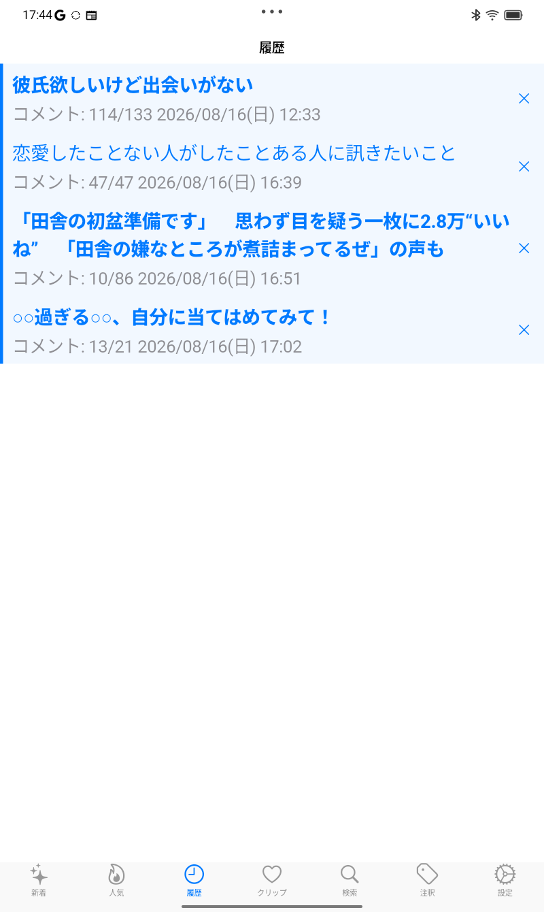
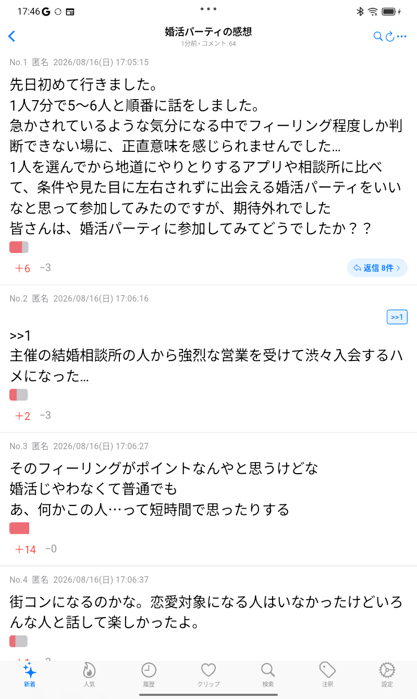
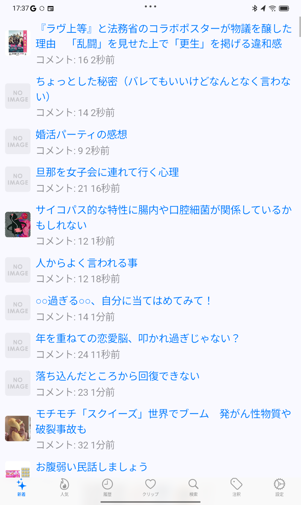
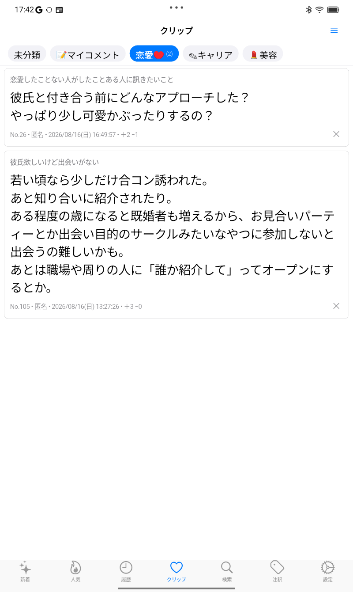
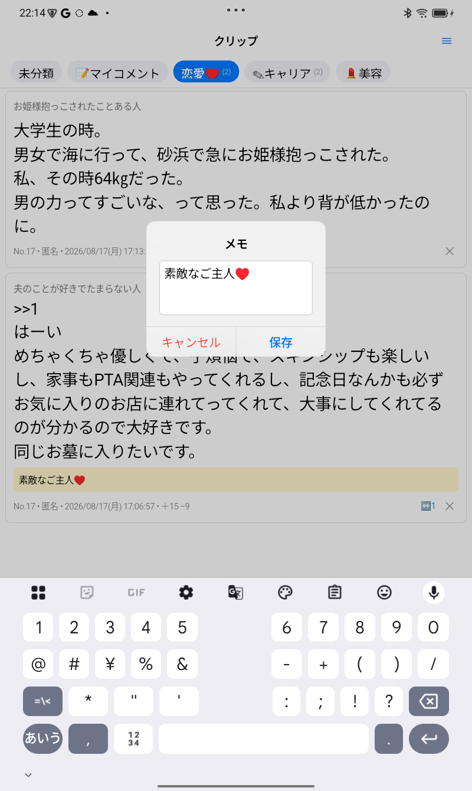
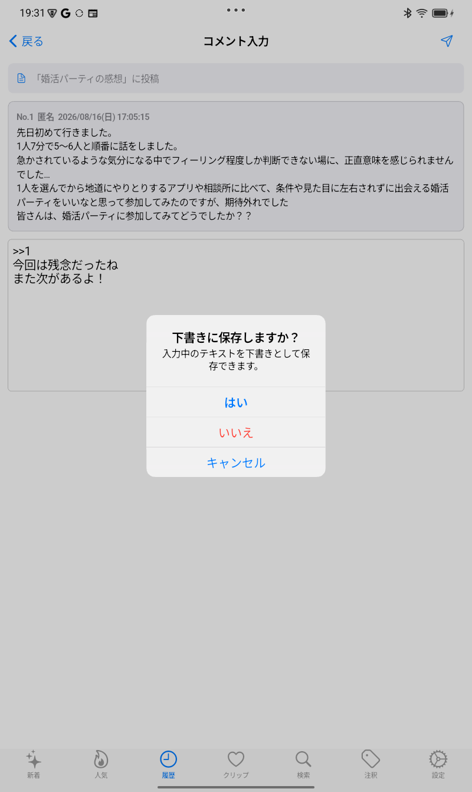
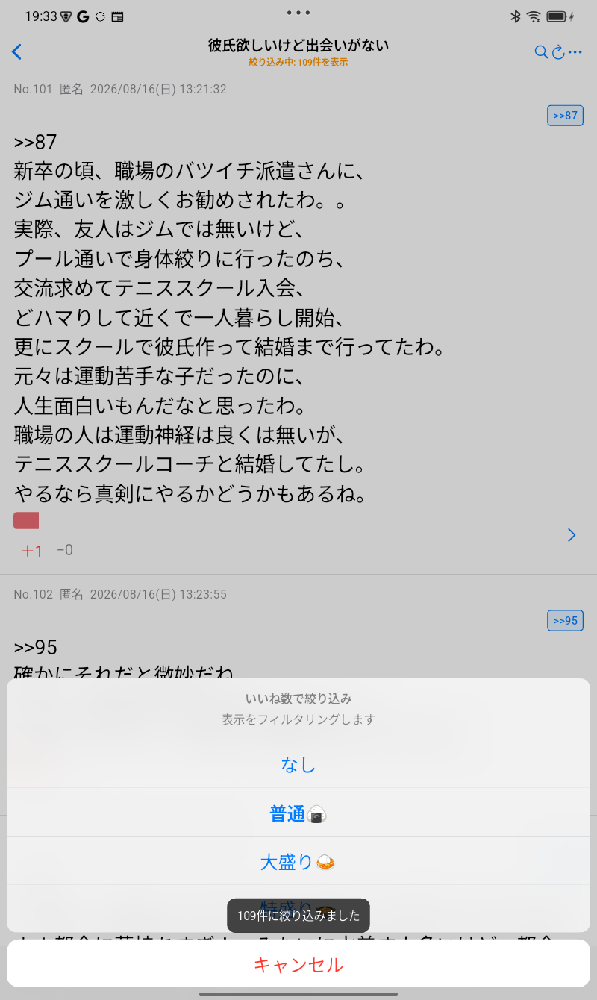
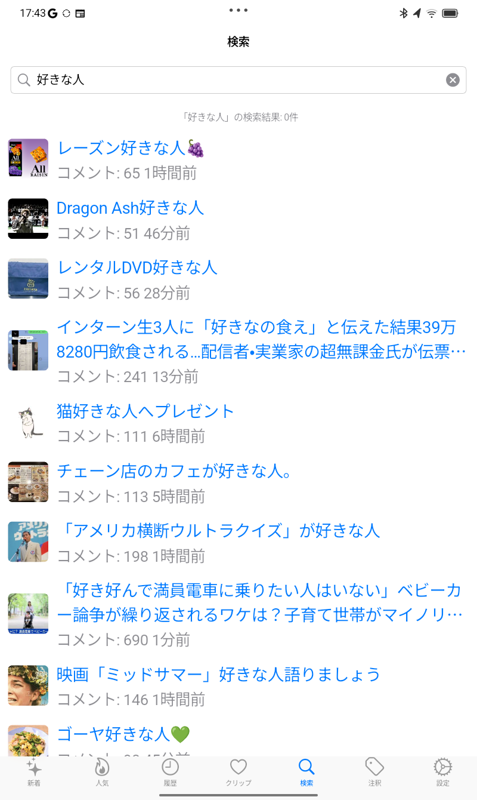
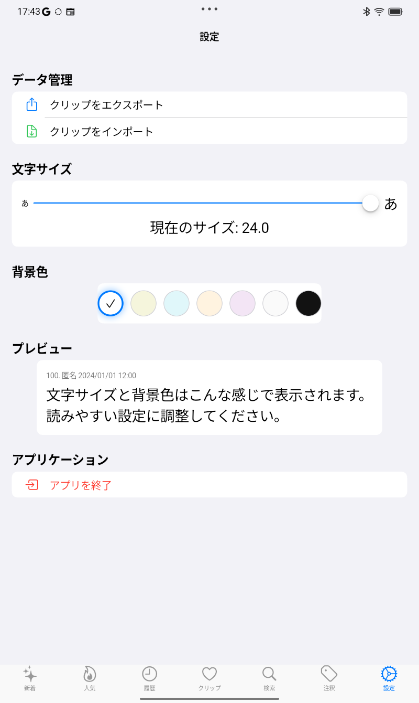

読み返し
一度読んだトピは、すぐ開ける
一度開いたトピックのコメントは端末に自動で保存。
次に開くときは読み込みを待たずに表示します。
電波がない場所でも、保存済みのコメントは読み返せます。


女子の好きな話題を毎日おしゃべり♪
がるなびは、ガールズちゃんねる（がるちゃん）をiPhone・AndroidスマホやPCで快適に閲覧できる無料のがるちゃんアプリ・ブラウザです。一度開いたトピックのコメントは端末に保存され、次に開くときは待たずにすぐ読めます。保存済みのコメントは通信なしでも読み返せます。検索、クリップ、下書きなど、長いトピを読むための機能も備えています。

Android版の実際の画面といっしょに、がるなびの機能を紹介します。
一度開いたトピックのコメントは端末に自動で保存。
次に開くときは読み込みを待たずに表示します。
電波がない場所でも、保存済みのコメントは読み返せます。


長文トピでもストレスフリー。
コメント番号ジャンプも搭載。
気になったコメントをワンタップで保存。
ラベルやメモをつけてわかりやすく。


コメントを下書き保存。
アク禁のとき大活躍！

いいねの数やフリーワードで絞り込めます。
長いトピを見るときに便利。


保存したクリップやメモを別の端末に入出力できます。
文字サイズや色変えも！

GirlsChan.app をアプリケーションフォルダに移動してください。
※ macOS版は未署名のアプリとして警告が出る場合があります。
macOS: Gatekeeperでブロックされた場合、アプリアイコンを右クリック(またはControl+クリック) → 「開く」を選択してください。
一度開いて端末に保存されたコメントは、通信できない場所でも読み返せます。新しいトピックやコメントの取得、画像の読み込みにはインターネット接続が必要です。
公開後はApp Store経由で最新版へアップデートできます。
Google Play経由で最新版へアップデートできます。
Microsoft Store経由で自動的に最新版へアップデートされます。
新しい .zip をダウンロード・解凍し、古いアプリと置き換えてください。
個人開発の署名なしアプリのため、誤検知されることがあります。ハッシュ値を確認の上、例外設定をお願いします。
不具合報告・サポートのお問い合わせは mail@cloxs.jp までお願いします。Xの @chibikuromoka でも受け付けています。